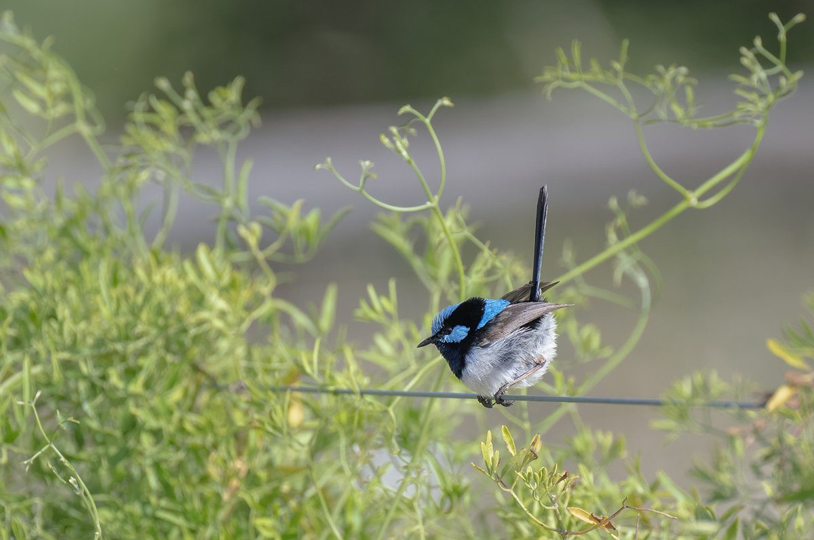

About the Superb Fairywren
The superb fairywren is a bird in the wren family. It is a species of fairywren birds, which are found in parts of southern Australia and New Guinea. Superb fairy wrens specifically are found across areas of south-eastern Australia. These birds are active during the day. They spend most of the time foraging on spots of open ground near a shelter, which consists of dense foliage. They typically fly for short bursts rather than for extended periods of time, and move on the ground with a series of hopping movements.
Picture
Here an image of an individual Superb Fairywren in its natural habitat. It is perching on a wire, probably resting, while being surrounded by plants.